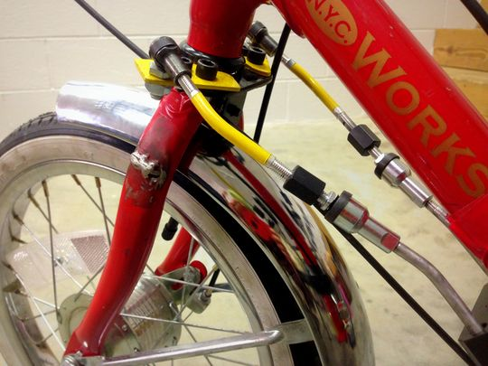

Adaptive tricycle for indoor use S14
Abstract
6-year-old, Joleen, needs an Adaptive Tricycle for exercise. She has a disease called CMV which has limited her mental and physical development.
Team members
- Tyler Edwards
- Brandon Ozment
- Andrew Fisher
- Justin Johnson
- Jeremy Betzler
Help from others
- Ms. Kathleen Kennedy
Problem Statement/overview of the need
Design an adaptive tricycle for a 6-year-old, Joleen, with CMV; multipurpose trike for both fun and physical therapy. The tricycle is to be well-suited for both grassy and asphalt terrain.
Design Specifications
The following Design specifications were determined/given to us after discussing the project with the client. 1. Multiple gears (for multi-terrain use as well as aiding physical therapy)
2. Expandable with age (possibly increments of 3-5 inches)
3. Rounded handlebar "ring" for steering ease.
4. Painted red
5. Multiple baskets for storage
6. Extra back support (possibly adjustable with padding)
7. Straps on pedals to prevent the feet from slipping off
8. Larger, knobby tires for multi-terrain use
9. Rear steering attachment with a additional braking mechanism
10. Cup holder
11. The following are current relevant dimensions for Joleen
Inside leg to knee 12"
Outside leg to knee 16"
Hip width 13"
Knee to heel 16"
Shoulder to butt 21"
Trunk width 11"
Example of Tricycle Client Wanted (Approx. $2000)
Conceptual Design
Below are 3 of our concept designs, all done in Solid Works. The main differences will be discussed below each individual picture, along with pros and cons. It is important to note that in all cases we would intend to purchase a standard 3 speed tricycle and then convert it as best as possible to the product the client originally intended to purchase with the addition of any extra requests that were asked for such as additional cup holders and rear steering. The concepts below primarily highlight different rear braking/steering systems, seat options, and handlebar options. These are by no means full, direct representations of what we intend to build. Instead they serve as only very rough sketches aid in showcasing some of our possible design plans. The remaining mechanisms not seen in the designs such as the peddles, tires, baskets, etc. would be close to a standard adaptive tricycle as seen above.
Design Concept 1
This is the first concept design. The seat has a wide bottom with a supported back rest. The steering device is in the back, and has easy access for the mother to use.
Pros:
- Easy to assemble
- Simple to operate
- Can be removed when the child no longer needs help
- Rear steering is not very invasive
Cons:
- Limited control on rear steering.
- Both standard rider and rear driver have control of two separate steering mechanism which could lead to complications
- Using brakes to alter direction will also slow down the speed of the tricycle
Design Concept 2
This is concept design number two. In this design, there is only one one standard bike seat, with a removable steering system and brake for the mother. The oval handlebars are replaced with standard handlebars.
Pros:
- Easy to use steering.
- Easy to assemble/remove.
Cons:
- No back to seat
- No special handlebars.
- Steering bar is very invasive for the rider
Design Concept 3
This is the third design concept. The seat is much more elaborate, and is designed for comfort and safety. The steering system in the back has full control over the direction. There is also a handbrake for the mother to use.
Pros:
- Full control over steering by both rear driver and rider
- Seat is safest option.
Cons:
- Seat is very bulky.
- More difficult to assemble and remove later on
- Rear steering bar would be more obvious and in the way
- The bars would be linked to the front tire in such a way that the rear bars would also move anytime the front bars moved
Design Concept 4
This is the fourth concept design for the adaptive tricycle. In this design, concepts from designs 1 and 3 are all used, including the intuitive steering and simple seat. The handlebars are the requested type and the wheels are 16 inches in diameter.
Pros:
- Full steering control for parent
- Seat has wide base and back rest.
Cons:
- Rear steering bar would be slightly invasive.
Evaluate concepts/select candidate
Design Concept evaluation
In all four designs a standard tricycle chassis is used. We are using the TR16-3CB Worksman developmental youth trike found at this weblink: http://www.worksmancycles.com/shopsite_sc/store/html/tr16-3cb.html
Design Concept 1
The seat is not clearly drawn to show its attributes, however, this seat appears to be the best option for multiple reasons. The customer specifically asked for the seat to be bulkier and more comfortable than a standard bicycle. This particular seat is not as bulkier as the full "boxed in" seat as seen in design concept 3. Therefore, this seat is a happy medium between the two extremes as discussed in the bullet points above. It provides the added comfort and back support as requested by the customer without becoming too obtrusive for the user.
The handlebars in this design allow for the most flexibility and emphasis on ergonomics.
This will allow the user to use the steering wheel at several different heights, angles, and gripping positions
This rear steering mechanism is intended to work using rear braking to turn. To elaborate, the rear driver would have two braking systems, one that linked to the left rear tire and one that linked to the right rear tire. If the rear user hits one of the brakes then it should cause the bike to pivot and rotate in the desired directions. The benefits of this system is that it is the most unobtrusive option for
both the rear driver and the rider. However, this design is flawed for multiple reasons. First, since the rear steering is not linked to the front steering mechanism the two users can theoretically be trying to turn in opposite directions which will cause the tricycle to not function properly. Secondly, the rear steering will decrease speed anytime it is used which will put more strain on the rider to pedal. Lastly, this steering mechanism is dependent on motion, so if the tricycle is not moving at all the tricycle will require an excess amount of work to turn versus a standard steering mechanism.
Design concept 2
Immediately we know that the seat cannot be used due to the costumers specific request for something that provided more cushion and support. However, it would have been the cheapest and easiest option.
In regards to the handlebars, the customer did ask for rounded handlebars if we could and this design would violate that request. Also these handlebars can only be lifted and lowered for the rider which limits the usefulness and flexibility that other options have.
This steering mechanism would be the simplest to use, cheapest, and easiest to manufacture. However, the side effect of this is that the device is very obtrusive for the rider. Also due to the way the device is mounted to the front, anytime the user were to steer the rear steering device would also move around which could potentially harm both the person in the rear and the rider.
Design Concept 3
This design keeps the same handlebars as seen in design 1 due to it being requested specifically.
On the other hand, the seat does differ from the previous two designs. The seat would not actually look like this design. Its primary purpose is to model the idea of implementing a very protective seat onto the tricycle. This seat would have a large cushioned seat, backrest, and even headrest. Additionally it would have side cushions to help keep the user in the seat and provide arm rests and there would be a seat belt for additional support. This seat far exceeds the necessary support and security for the customer. Though having this much may be safer, it would only be obtrusive and more expensive since it is unneeded.
This rear steering mechanism hooks directly to the front steering wheel using the metal rods underneath the tricycle. This would be a decent implementation because it does provide full control to the rear user, however, it does limit the steering rotation angle. This is because if the front tire were to turn too far then the tire would spin onto the metal bars.
Selected design candidate
From these 3 designs, we were able to take the issues and benefits from each and build open some of the them to create the design concept 4.
This design uses the medium level support/comfort seat and the rounded handlebars because they were the best option provided and they were what the customer requested.
For the rear steering mechanism we used the design seen in concept 3. However, to get around the metal rods being in the way of rotation, we decided to use cables that run underneath the tricycle and attach to the front steering wheel. This way the benefits of full control and full rotation were still maintained for the rear user.
Detailed Design
This section will describe a detailed design process
For this project, we are purchasing a prebuilt tricycle that includes a standard tricycle frame and wheels plus an extra cushioned seat with back rest, pedals that have straps, and a rear basket. Therefore, the remaining designs are only modifications and additions to the prebuilt device. Each modification is detailed below. Please note that at this time we do not have any of the tricycle dimensions or specifications. Therefore, much of the information below is based on approximations until we get the tricycle in. Thus some of these plans are subject to change.
Cup Holders
The customer requested cup holders for both the rear steer-er and the rider. So we plan on purchasing standard bicycle cup holders and attaching them to both the front and back of the tricycle. As far as mounting the device goes, we intend to use the provided mounting equipment from the cup holder device.
Front Basket
One of the additions requested was a front basket for the user. So we will simply purchase a standard bicycle basket and mount it to the tricycle.
Front Handlebars
First we will remove the original handlebars. Then we will machine the handlebars as seen in the drawings below. To do this we will take one of the metal rods and cut and bend it into the circular shape as seen in the design drawings. Then we will cut out the appropriate pieces for the front mount that will be used to link the handlebars with the tricycle. This will require a small amount of welding to combine the two rods. Then we will bend the handlebars in place. Next we will drill a hole through the handlebars and the mount pole so that a pin can be placed through to prevent the handlebars from rotating. We will then add several additional holes through just the handlebars located on the same plane to the first hole. This will allow for multiple locked angular positions of the handlebars.
Rear handlebars
The current plan is to take the front handle bars and mount them to the rear steering mechanism. This will need to be reevaluated when we get the tricycle in hand just to verify that this will work. This way it will require one simple weld and will save on costs since we are reusing parts.
Rear steering
This is the modification that will require the most work and detail. First we will add a rear bracket to the back of the tricycle that will hold the rear steering pole. Then we will machine the cable holder pieces from sheet metal and weld them on. The pieces will run along the bottom of the tricycle and will feed the cable to the front of the tricycle. Next we will machine the rear steering pole by cutting one of the purchased rods and then welding that to the old handlebars. Then we will machine the rod at the bottom of the rear steering that holds the cables as well as the mounting cuff located near the rod. Lastly we will wire up the cables.
Rear braking
Our current plan is to purchase a standard disk brake mechanism and attach it to the front wheel for the rear braking system. However, this will be reevaluated when the tricycle arrives to make sure this addition can be accommodated.
Description of selected design
This design has been detailed above, but here is a brief summary of what was covered for this design so far. The final design is based on design concept 4 as seen above. The modification highlights are as follows: The front handlebars will be removed and replaced with circular ones that can tilt toward and away from the user which will provide more variation in usage and ergonomics. The rear steering mechanism will consist of cables that link from the front wheel all the way to a device in the back. This device is connected to to the rear handlebars in such a way that the rear steer-er can rotate the handlebars which will cause one of the cables to be pulled and the other will be given slack. This will cause the front wheel to turn. Also, we will be adding an additional disc brake to the front tire so that the rear steer-er can brake the bicycle as well. Lastly, there are a few other additions we will be adding that are personal requests from the customer such as cup holders, baskets, and any other things to make sure that this bike will make a very special little girl happy (horn, stickers, streamers etc).
Analysis
Engineering analysis 1: Mobility analysis of steering system
Analysis performed by Jeremy Betzler
Engineering analysis 2: Mobility analysis of braking system
Analysis performed by Tyler Edwards
Engineering analysis 3: Minimum Turning Radius
Analysis performed by Brandon Ozment
CAD Drawings
CAD drawings done by Andrew Fisher and Justin Johnson
Front Handlebars
Front Handle Bar Mount
Cable Bolt Tabs

Cable Tabs
Cable Bolt
Rear Steering Column
Rear Steering Disk
Rear Steering Mount
Rear Steering Mount Plate
Bill of Materials
Assembly Instructions
The tricycle was bought separately, all that was need to be added on was the rear steering system and a few of other minor cosmetic details.
1) To start, we required a housing for the rear steering, where the brake cables that controlled the steering would not be interfered with. It was decided to use a box that still was able to fit the bike without causing too much interference. By using a plasma cutter, we were able to cut out each section of the box precisely the distances we needed.
2) In order to attach the box to the bike, steel tabs had to be created, as the box was cut from aluminum, and could not be welded onto the bike. The tabs were cut using a band saw, and drill holes were cut in both the box and tabs using a drill press.
3) A hole was cut in the top of the box, to allow the steering pole access to the user. This was also achieved with the drill press.
4) The steering pole was placed inside of bearings attached by bolts in the box. A small metal rod was welded to the bottom of the pole. Holes had been cut out to allow brake cables through.
5) The box was then welded together, and the tabs welded to the tricycle.
6) After this, the box was attached with bolts to the steel tabs, allowing the box to remain in place.
7) Following this, brake cables were run through the small rod and were tightened to the front steering axle.
8) The cables were then attached to the frame of the bike, out of the way of the pedals.
9) The arm rests were attached separately. By taking them off of a wheelchair, and using a cut steel bar to hold them in place, it was simply welded underneath the seat.
10) Paint was then applied as necessary.
Photos of Completed design
Below are images of the completed design while partially disassembled. The black box in the corner of the photo below is mounted to the back and houses the steering (guide) arm. The brake cables are then attached to the bottom of the steering arm, ran along the frame of the bike, and connected to the welded tabs on the fork of the bike at the front.
Instructions for safe use
To properly use this tricycle, have the child sit on the seat, with her feet strapped onto the pedals. Push her if she needs to start, but allow her to propel herself on her own. For best use, use tricycle on paved roads.
Summary and Conclusions
This was a very long, yet satisfying project for all of the group. It was difficult at first to figure out just how we would be able to allow the guardian to have control over the tricycle while not interfering with the girls riding experience. In the end, however, we were able to find a system that works out very well. There were several hiccups in the fabrication process, some of which included riveting and welding. Overall, we hope that the impact we have made is a positive one and she will benefit greatly from this tricycle.
POST DELIVERY MODIFICATION
After several uses of the bike an issue arose. It was discovered that Joleen still had slight control of her upper body and could partially control the direction. The issue was found in the brake cables when Joleen decided to turn one direction and the parents tried to steer her in the opposite. The amount of stress applied to the cables was too great and in turn snapped the cable in tension. It was then that Professor Canfield requested his teaching assistant (Matt Blaylock) to retrieve the bike, redesign, and rebuild it. During this process the parents made a few extra requests: 1) Fix the brakes; it seemed that there was an issue found with the brakes not working for the parents guiding Joleen. 2) Try to incorporate colors such as yellow and black with the red to simulate Fireman Sam (Joleen’s favorite show). 3) Make it possible to disassemble the entire mechanism so that it could return to a normal bike one day if Joleen gains full control. 4) Raise the steering arm higher so that the parents do not need to bend over while guiding her. 5) Make it feasible for her to have some control of the steering without it causing a failure. In the near future there will be links to videos going over in greater detail the design process that was followed for this redesign. For now the pictures of the final product are shown below.
|  The Final Product for the front steering mechanism. |